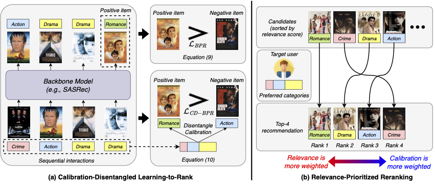
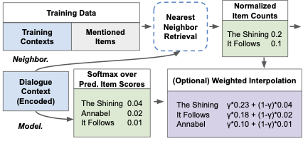
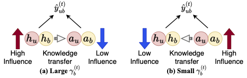
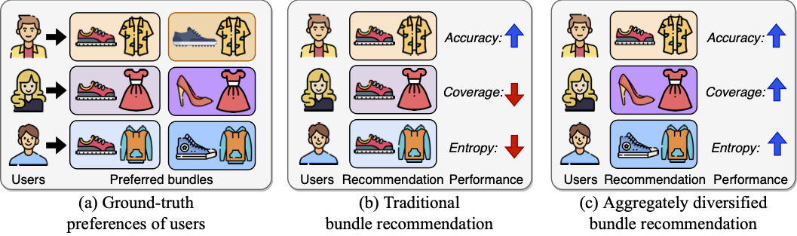
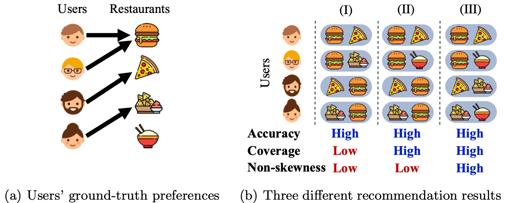
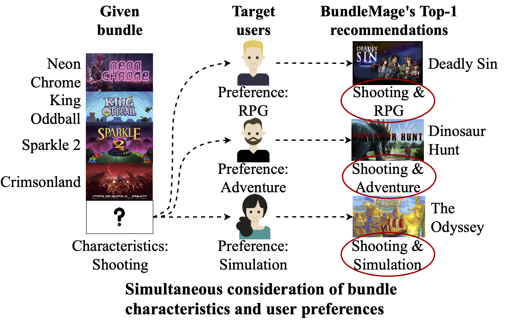
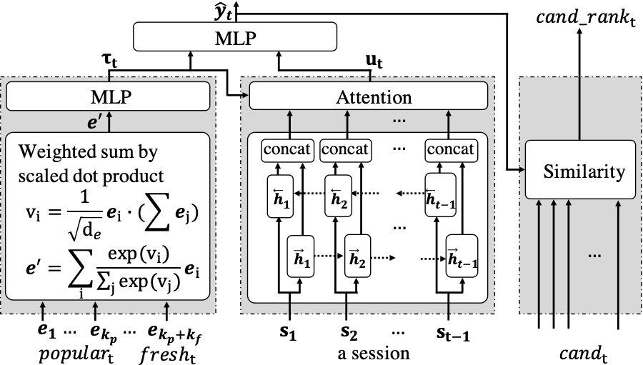
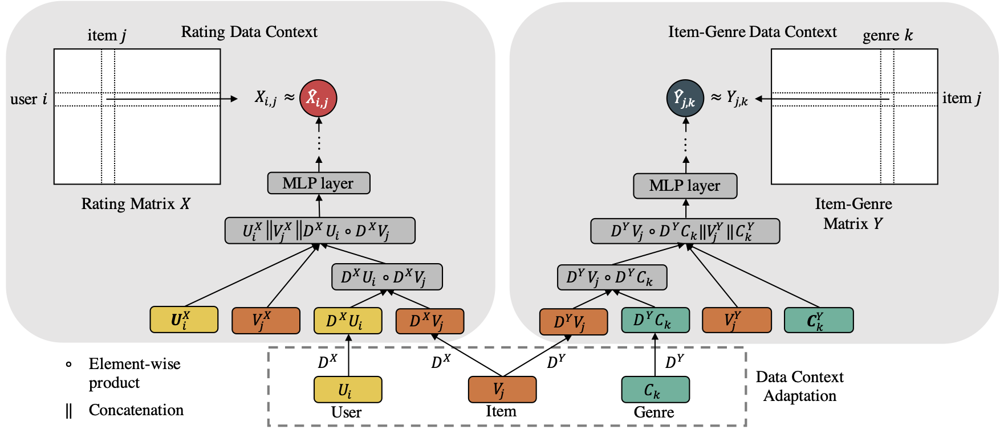
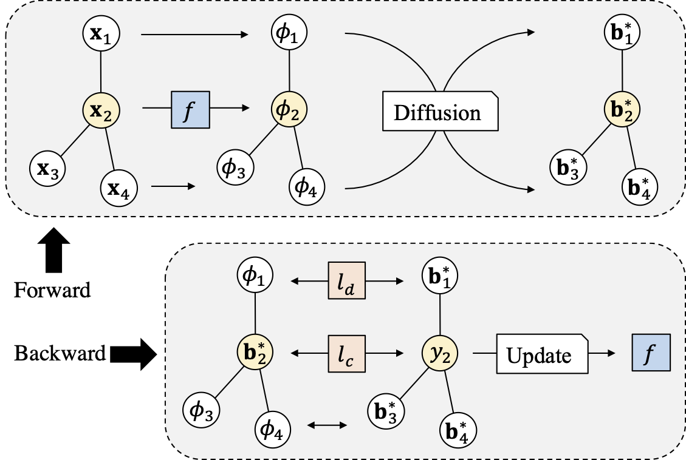
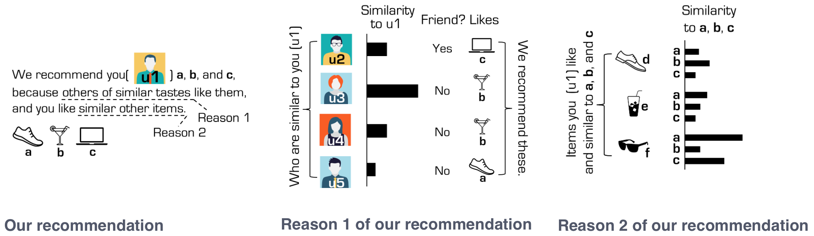

Behavior
Learning robust preferences from sparse, sequential, and bundle interactions.
Senior Machine Learning Engineer · Roblox
I build recommender systems that move beyond behavioral patterns toward a deeper understanding of what people need.
I am a Senior Machine Learning Engineer at Roblox. My research spans recommendation, large language models, and multimodal learning, with an emphasis on systems that reason well and work in practice. Previously, I was a Senior Applied Scientist at Microsoft and a postdoctoral researcher at UC San Diego with Prof. Julian McAuley.
jeon185@gmail.com01
Research
My research traces a path from behavioral patterns, through multimodal understanding, to reasoning in recommender systems.
I began with collaborative filtering under sparsity, cold-start bundle recommendation, and calibrated, diverse ranking. That work revealed the limits of behavior alone, leading me to incorporate commonsense knowledge, dialogue, and visual content. I am now interested in systems that can reason about items and user needs—while remaining efficient enough for real-world use.
Learning robust preferences from sparse, sequential, and bundle interactions.
Grounding recommendation in dialogue, vision, and external knowledge.
Building adaptive systems that diagnose, explain, and improve their decisions.
Resources for reproducible recommendation research.
A conversational recommendation dataset in which every item includes an image.
A dataset for context-aware action recommendation in smart-home environments.
02
Updates
Joined Roblox as a Senior Machine Learning Engineer.
Self-EvolveRec, our work on self-evolving recommender systems, is now available.
Joined Microsoft as a Senior Applied Scientist.
Our work on multimodal conversational recommendation was accepted at KDD 2025.
OpenAI supported our conversational recommendation research with API credits.
Our work on conversational recommendation was accepted at RecSys 2024.
Our work on calibrated sequential recommendation was accepted at CIKM 2024.
Our cold-start bundle recommendation work was accepted at The Web Conference 2024.
03
Background
Sep. 2026 — Present
Senior Machine Learning Engineer
Feb. 2026 — Sep. 2026
Senior Applied Scientist · Redmond, WA
Sep. 2023 — Aug. 2025
Postdoctoral Researcher, Computer Science and Engineering
Jul. 2020 — Aug. 2020
Research Intern, Machine Learning Team

2019 — 2023
Ph.D., Computer Science and Engineering
M.Sc., Computer Science and Engineering · 2019
2017
B.Sc., Computer Science and Engineering
04
Selected work











05
Community
CIKM 2024
BigComp 2020–2023 · CIKM 2018–2019 · ICDM 2019 · ICLR 2021 · KDD 2019–2025 · NeurIPS 2021–2023 · SDM 2024–2025 · The Web Conference 2019–2021, 2024–2025 · WSDM 2019
Frontiers in Big Data 2023–2024
CIKM 2024